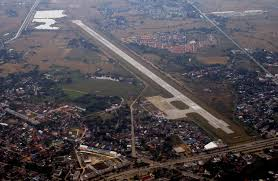
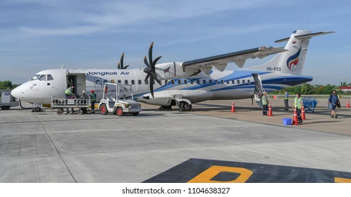
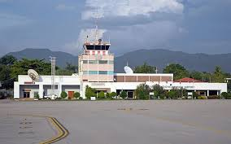

Airport Information
Lampang Airport (LPT) is a small domestic airport located about 3 kilometers from Lampang city center. It mainly serves flights between Lampang and Bangkok.
The airport is clean, quiet, and easy to use, making it convenient for travelers visiting Lampang Province.
🌟 Highlights
- Small and easy-to-navigate airport
- Short waiting time
- Beautiful mountain views during landing
- Friendly staff and calm atmosphere
- Close to Lampang city
Information for Travelers
📍 Location: Lampang Airport, Lampang Province, Thailand
⏰ Operating Time: Daily, depending on flight schedule
✈️ Airlines: Nok Air (Bangkok – Lampang)
💰 Taxi Cost: Around 100–200 THB to city center
🚗 Travel Time: 10–15 minutes to downtown
🅿️ Parking: Available at the airport

Airport Facilities

🧳 Services
- ✓ Waiting area
- ✓ Small café and snack shop
- ✓ Restrooms
- ✓ Taxi service
- ✓ Free Wi-Fi
Gallery
